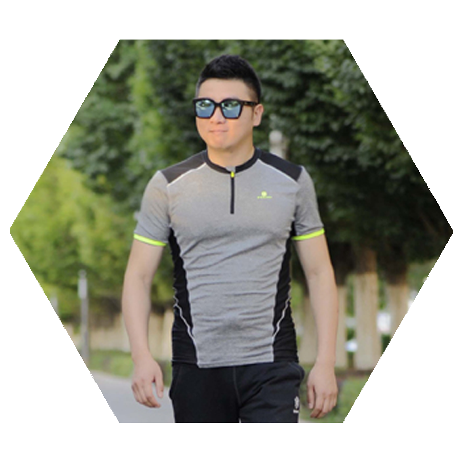
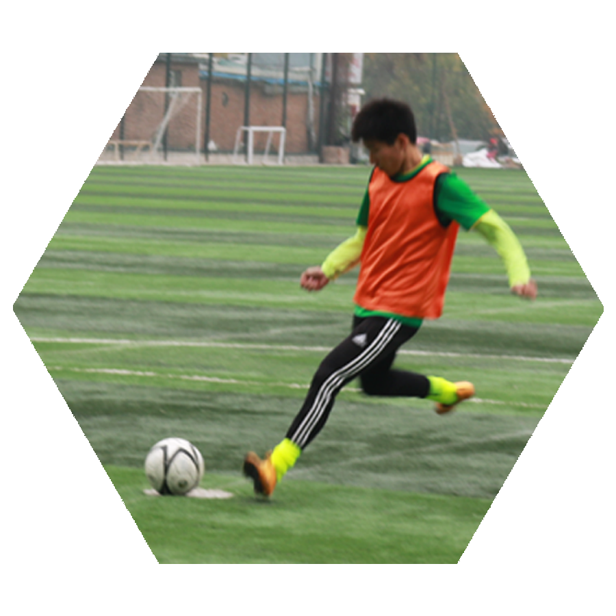
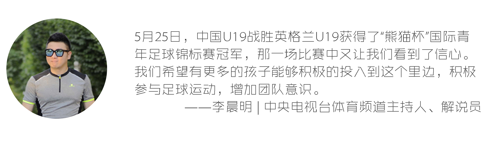
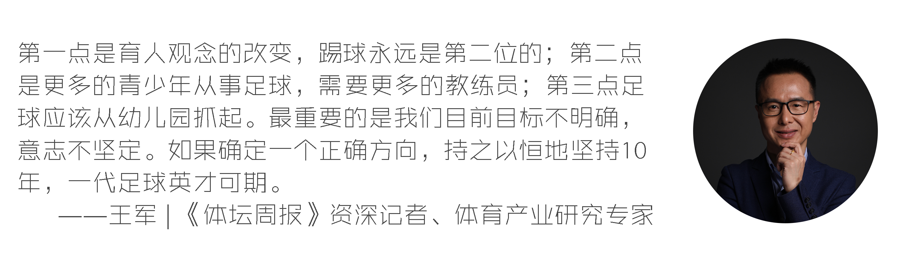
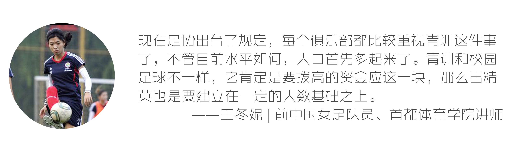
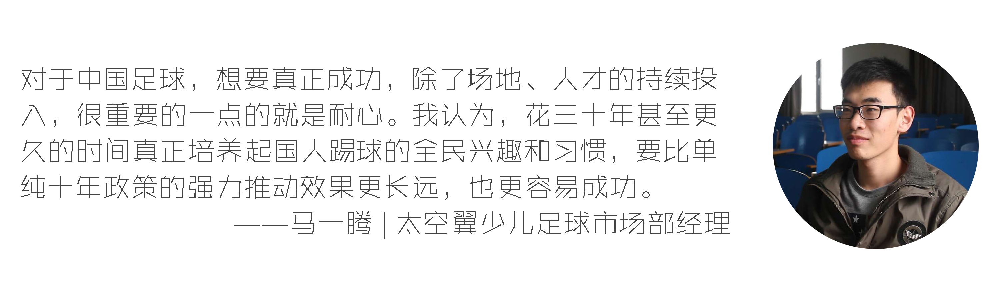

Q：如何评价中赫国安班“体教结合”？
韩涛 丨 国安青少部体系发展经理
我们希望是两条腿走路，在保证球员的训练质量、比赛的场次以外，对文化课着重加强。比如说考试没有达标，梯队的教育辅导员拥有一票否决权，不经过主教练的同意，就直接让孩子停训，把文化课的所缺的东西补回来。通过这些方方面面能够让孩子认识到，除了作为一个在国安踢球的运动员以外，同时也不要忘了他另外一个身份还是个学生。

李晨明 丨 CCTV5主持人、解说员
俱乐部和学校的合作能够吸引更多球员加入职业训练的同时兼顾学业，对于俱乐部来讲的话，当然需要吸纳越来越多的后备人才的储备，把基数越大，在今后选拔出兼优秀人才的这种可能性才越高。青训其实做的是教育，而不只是做体育，实际上是教育行业告诉孩子们应该怎样通过足球这一项游戏从中体会到快乐。
王军 丨 《体坛周报》资深记者
肯定有一定的积极影响，但这种影响是比较有限的。在重点中学上课，不代表拥有重点中学学习能力，学习能力和学习场所是两个概念。“体教结合”本身是一个伪命题，难道踢球的人就不应该学习？育人永远是第一位的，踢球才是第二位的，这样才能够真正提高中国足球的素质和水平。也才有望解决中国足球当下的很多问题，利己主义、拜金主义等等。

李宇航 丨 前牛栏山一中校队队长
学校为俱乐部的小球员提供接受良好教育的环境，俱乐部为学校提供高水平的小球员来帮助学校在各种比赛中取得好成绩。虽然是一个双方互利共赢的事情，但对校园足球的推动作用我认为不太大。对于学校来说更多是培养相应的足球特长生，提升这部分特长生的能力。但是对于普通学生来讲可能帮助甚微。
中国足球青训展望



